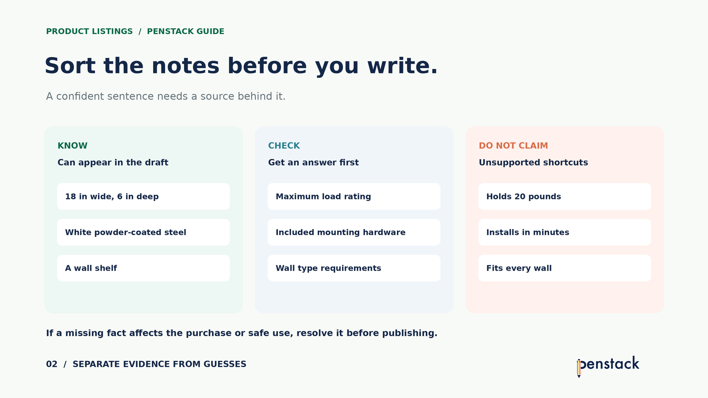
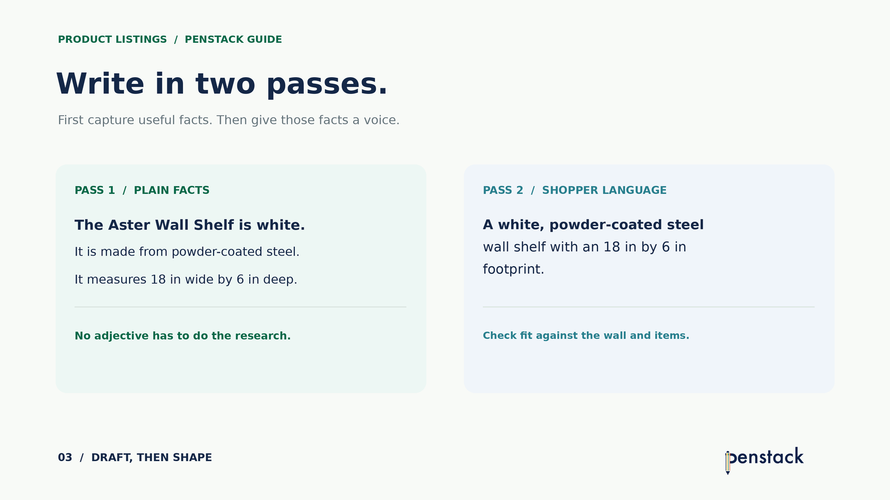
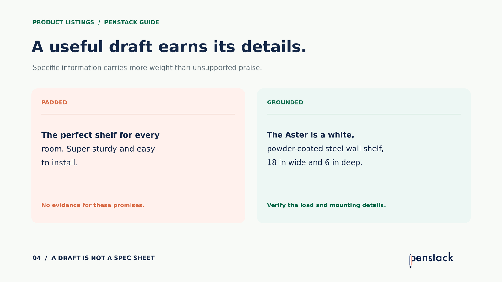

When a product description field is empty, the first job is not writing. It is finding out what you can say with confidence.
A title and one photo are rarely enough. But you do not need an elaborate creative brief, either. A small source card can turn scattered product notes into a useful draft—and make the missing information visible before a polished sentence hides it.
1. Start with a source card, not a sentence
Open a note and fill in five lines: what it is, what it is made of, its measurable details, what the photos confirm, and what is still unknown. Pull from the product record, supplier sheet, maker notes, variants, metafields, and actual product photos.
Here is an illustrative example: the Aster Wall Shelf. Suppose its source record confirms a white powder-coated steel wall shelf that measures 18 inches wide and 6 inches deep. The load rating and included mounting hardware are missing.
This is enough to draft an accurate opening. It is not enough to promise that the shelf holds a certain weight or installs easily.
2. Sort missing details by their effect on the decision
Some gaps can wait. Others change whether someone can buy or safely use the product. For a wall shelf, load rating and wall requirements are decision-critical. A missing styling suggestion is not.

Ask the supplier, inspect the packaging, or confirm specifications with the person who made the item. If a critical detail remains unknown, keep the copy as a draft and resolve the gap before publishing. A smooth sentence cannot compensate for missing product information.
Photos can confirm visible details such as color or shape. They do not prove material composition, load capacity, included hardware, or how long installation takes.
3. Write in two passes
Pass one: say the facts plainly. “The Aster Wall Shelf is white. It is made from powder-coated steel. It measures 18 inches wide by 6 inches deep.” This is not elegant, and that is fine. Every sentence has a source.
Pass two: make it easier for a shopper to use. Combine related facts, remove repetition, and put the most useful detail first. You can add brand voice after the information is sound.

“The Aster is a white, powder-coated steel wall shelf measuring 18 inches wide and 6 inches deep. Use those dimensions to check the space where you plan to mount it.”
This is a working description, not a complete product page. It needs the verified load rating and mounting information before it can answer the most important buying questions.
4. Let specifics replace filler
When you have little information, generic praise is tempting. “Perfect for every room,” “super sturdy,” and “installs in minutes” sound finished but do not tell the buyer what the record actually supports.

Specifics also help you decide what to request next. If mounting hardware is included, say exactly what is included. If the load rating depends on wall type, explain the condition. Do not bury a limitation under decorative language.
5. Put the draft through a publish gate
Read the copy beside the product record, photos, variant options, and any structured fields. The description should agree with them. Then run a short check:
Can every material, dimension, and performance claim be traced to a reliable source?
Are the questions that could change a purchase answered?
Does the copy agree with the title, images, variants, and metafields?
Can someone scan it without sorting through repeated claims?
If a critical answer is still missing, the next step is product research—not another rewrite. Once the facts are complete, polish the voice and publish.
Where penstack fits in
Penstack uses the collection brief, existing product description, and product metafields as source context for a generated draft. A better source card gives that workflow better material.
Review the output against the verified facts. Penstack can help organize and phrase what you provide; it cannot establish a missing load rating or mounting requirement from an empty field. Fill those gaps at the source, then review the final description before publishing.
The takeaway
You do not need a clever opening line to begin. You need a short, honest product brief—and a clear boundary between facts, questions, and guesses.
Turn your product notes into a usable draft.
Penstack keeps source context, generation, review, and publishing in one workflow.
Related guide: Anatomy of a Great Product Listing · Further reading: Shopify product descriptions · Reviewing generated descriptions